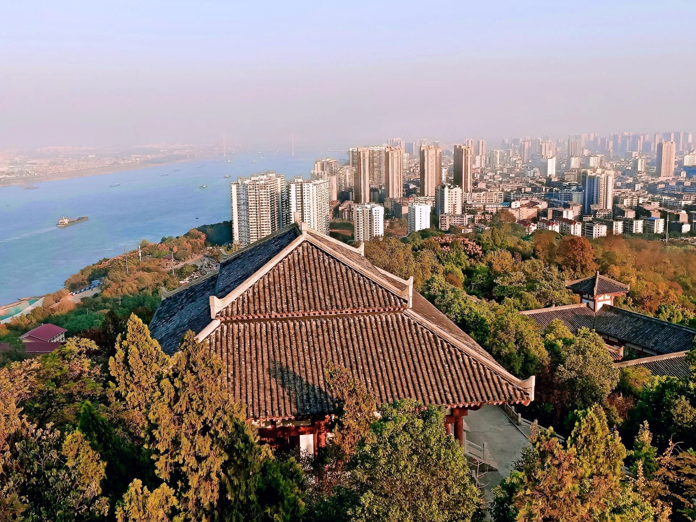

"湖北之根，武昌之源"
这八个字不是旅游宣传语，是鄂州真实的历史地位。
帝尧时这里是"樊国"，夏时是"鄂都"，殷商时为"鄂国"。 春秋战国时期，楚王熊渠分封自己的儿子熊红到此为鄂王，修筑鄂王城—— 湖北简称"鄂"，源头就在这里。
而到了三国，公元 221 年孙权自公安迁都鄂县，取"以武而昌"之意把它改名为"武昌"。 所以历史上那个作为东吴都城的"武昌"，指的是今天的鄂州，而不是今天武汉市的武昌区。
宁饮建业水，不食武昌鱼。 ——三国时期民间歌谣，说的正是东吴都城武昌（今鄂州）
一条时间轴，走过三千年
从传说中的樊国，到今天的花湖机场，鄂州的名字换了很多次，但城一直在这里。
-
帝尧时期 · 樊国
史载鄂州在帝尧时为"樊国"，夏时为"鄂都"，殷商时为"鄂国"，是长江中游较早的方国之一。
-
春秋战国 · 鄂王城
楚王熊渠分封其子熊红到此为鄂王，修筑鄂王城。湖北简称"鄂"即由此而来。秦统一后置鄂县。
-
公元 221 年 · 改名武昌
孙权自公安迁都鄂县，在西山东麓营建吴王城，取"以武而昌"之意改鄂县为武昌，并受封吴王。同年八月开始"城武昌"。
-
公元 229 年 · 称帝建都
孙权在武昌筑郊坛告天称帝，武昌成为东吴第一个正式都城。此后吴国两度建都武昌、三次营建武昌城，历时近 60 年。
-
元 · 至元十七年（1280）
观音阁始建，立于长江中的龙蟠矶之上，坐东朝西、逆水而立，后世誉为"万里长江第一阁"。
-
1949 — 1983 · 建市
1949 年 5 月 14 日鄂城解放。1983 年撤销鄂城市、鄂城县，将黄冈县黄州镇并入，合并成立省辖鄂州市。
-
2022 — 至今 · 空港时代
7 月 17 日，鄂州花湖机场正式投运，成为我国首个、亚洲首个专业货运枢纽机场。2024 年 3 月经国务院批复对外开放，鄂州进入"空港时代"。
孙权为什么选中这里？
鄂州古称鄂县，地势是"三面环山、一面临江"：北临长江，西靠西山（樊山），东扼虎头山，南望洋澜湖，是天然的军事要塞。
- 上游可制衡巴蜀，下游可威慑江东
- 东吴以水军立国，这里正是长江中游水军的绝佳大本营
- 周边铜、铁矿资源丰富，便于冶炼兵器、打造战船
吴王城什么样？
吴王城平面呈长方形，东西长 1100 米、南北宽 500 米，总面积约 0.55 平方千米。 它是孙吴建国时的第一个正式都城，也是三国时期留下的唯一比较明确的古代城址， 2013 年 3 月由国务院核定公布为第七批全国重点文物保护单位。
名人在这座城里留下的脚印
鄂州不只有孙权。历代名士或讲经布道，或游历隐居，在这里留下了大量诗文与遗迹。
东晋高僧
在西山创建古灵泉寺，为佛教净土宗的发祥地奠定基础。西山至今仍有相关参禅遗迹。
抗金名将
曾在此驻军练兵。鄂州地处江防要冲，历来是兵家必争之地。
宋代文豪
多次游历西山并题写《武昌西山》诗作。西山的九曲亭由其弟苏辙命名，另有试剑石、松风阁、洗墨池等遗迹。
群星璀璨
陶侃、李白、欧阳修、王安石、陆游、彭玉麟、张之洞等，都曾在鄂州留下踪迹与吟咏。
🪞 古铜镜之乡
鄂州出土的古代铜镜数量多、质量高，被称为"古铜镜之乡"。 这与本地悠久的铜矿开采和冶炼传统直接相关——孙权当年选这里建都，看中的资源之一就是铜铁。
🏅 入选三国文化核心市县
湖北省文化和旅游厅发布"三国故事·遗址新探——三国文化之旅主题榜单"， 鄂州凭借孙权称帝建都的独特历史地位，成功入选十大三国文化核心市县， 是全省东吴都城文化的核心区。

今天还能看到什么
历史没有全部埋进土里。在鄂州，你依然可以走到这些真实存在的地方：
- 吴王城遗址——位于鄂城区武昌大道南面、江家东巷西侧，全国重点文物保护单位。南垣周围已被住宅包围，是"藏在市井里的帝都"。
- 西山风景区——古称樊山，孙权曾于公元 221 至 229 年间在此修建行宫，即"吴王避暑宫"（1999 年重建的汉代风格建筑群）。
- 观音阁——元代始建，2006 年 5 月被国务院公布为全国重点文物保护单位。
- 滨江公园孙权像——总高 11.8 米，背靠长江，一手执剑、一手指向前方。